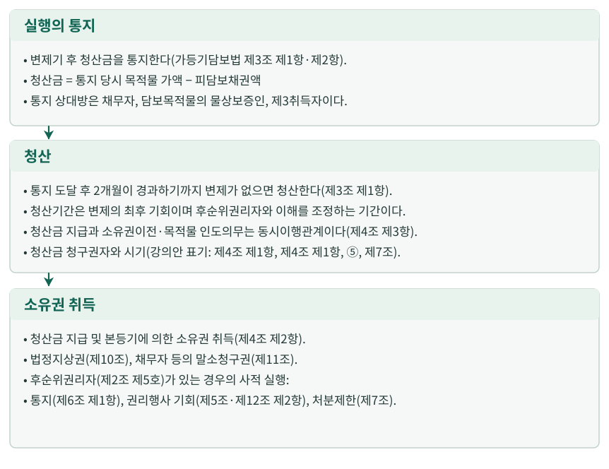

예습과제
Q1. 가등기담보권은 어떤 성질을 가지는가?
Q2. 가등기담보법이 정한 정산절차를 거치지 않은 채 담보권자가 경료한 소유권이전등기는 유효한가?
1. 서설
(1) 의의
가등기담보란 소비대차에 기한 채권을 담보할 목적으로 채권자와 채무자 또는 제3자(물상보증인) 사이에 채무자 또는 제3자 소유인 부동산을 목적물로 하는 대물변제의 예약이나 매매의 예약을 하고, 이와 함께 채무자의 채무불이행이 있는 경우에 채권자가 예약상 권리를 행사함으로써 발생하게 될 장래의 소유권이전등기청구권 등을 보전하기 위하여 가등기(또는 가등록)를 경료하기로 하는 내용의 가등기담보계약을 체결한 후, 이에 기하여 채권자 앞으로 가등기(또는 가등록)를 경료하여 두는 담보형태를 말한다.
(2) 법적 성질
(가) 가등기담보법에 담보가등기권리의 법적 성질에 관한 명시적 규정이 없지만, 다수설(담보물권설)은 같은 법이 담보물권에 특유한 권리인 경매청구권, 우선변제권 등에 관하여 규정함으로써 가등기담보권자에게 저당권자와 유사한 지위를 부여한 점을 근거로 일종의 담보물권으로 이해한다. 반면, 가등기담보는 소유권이전예약형의 담보방법을 기초로 하는 것으로 원칙적으로 소유권이전형 담보방법과 동일한데, 가등기에 기한 본등기가 마쳐지면 가등기 시로 소급하여 목적물의 소유권이 신탁적으로 이전되는 것이고, 다만 소유권의 신탁적 양도가 채무불이행에 따른 정지조건의 성취 또는 예약완결권의 행사를 조건으로 행하여지는 것에 불과하다는 소수설(신탁적 소유권이전설)도 있다.
(나) 다수설인 담보물권설에 의하면 가등기담보권 역시 담보물권의 통유성, 즉 부종성, 수반성, 불가분성, 물상대위성을 갖는다.
2. 설정과 이전
(1) 가등기담보권의 설정
(가) 가등기담보계약
(a) 계약의 당사자
계약의 당사자는 피담보채권의 채권자와 채무자인 것이 보통이다. 그러나 담보제공자는 채무자에 한하지 않고 제3자(물상보증인)라도 무방하다. 제3자 명의의 가등기담보도 가능하다. 즉, 채권자 아닌 제3자 명의로 가등기를 하는 데 대하여 채권자와 채무자 및 제3자 사이에 합의가 있고 나아가 제3자에게 그 채권이 실질적으로 귀속되었다고 볼 수 있는 특별한 사정이 있거나, 거래경위에 비추어 제3자의 가등기가 한낱 명목에 그치는 것이 아니라 그 제3자도 채무자로부터 유효하게 채권을 변제받을 수 있고 채무자도 채권자나 가등기명의자인 제3자 중 누구에게든 채무를 유효하게 변제할 수 있는 관계, 즉 채권자와 제3자가 불가분적 채권자의 관계에 있다고 볼 수 있는 경우에, 그 제3자 명의의 가등기도 유효하다(대법원 2002. 12. 24. 선고 2002다50484 판결).
(b) 계약의 요건
① 우선 피담보채권이 계약의 내용으로 포함되어야 한다. 그런데 가등기담보계약은 소비대차계약 또는 준소비대차계약에 의한 채권을 담보할 목적으로 체결되어야 한다. 판례도 같은 입장이다(가령 대법원 2001.3.23. 선고 2000다29356·29363 판결).21
② 가등기담보계약에는 그 목적이 채권담보에 있다는 점 및 피담보채무의 불이행 시 그 채무의 변제에 갈음하여 일정한 재산권을 채권자 앞으로 이전하기로 하는 대물변제의 예약을 하거나 피담보채무액 상당을 매매대금으로 하여 채무자 또는 제3자가 소유하는 부동산 등을 채권자가 매수하기로 하는 매매의 예약을 하는 점이 포함되어야 한다. 나아가 대물변제예약 또는 매매예약 당시에 그 재산권의 가액이 차용액 및 이자의 합산액을 초과하여야 한다(가등기담보법 제1조 참조. 대법원 1993. 10. 26. 선고 93다27611 판결).
(나) 가등기(또는 가등록)
가등기 또는 가등록을 갖추어야 한다(제186조). 가등기담보법은 이러한 가등기를 “담보가등기”라고 하여(같은 법 제2조 제3호), 이른바 보전가등기와 구별한다.
가등기는 가등기담보권을 공시하는 역할을 한다. 그런데 제3자로서는 등기부 기재만으로 해당 가등기가 담보가등기인지 여부를 확인할 수 없다. 게다가 저당권설정등기에서와 달리 피담보채권액, 이자, 변제기 등이 공시되지 않는다. 따라서 가등기는 공시방법으로서 불완전하다.22
대법원 2013. 9. 27. 선고 2011다106778 판결
가등기담보법 제3조·제4조는 이미 취득한 담보권을 실행하여 채권자에게 부동산을 귀속시키는 청산절차를 정한다. 담보계약만 체결하고 가등기나 이전등기를 마치지 않았다면 채권자는 아직 담보권을 취득하지 않았다. 이 단계에서 부동산을 제3자에게 처분하여 채권을 회수하기로 한 약정은 법의 규제를 피하기 위한 탈법행위 등 특별한 사정이 없는 한 위 조항을 위반했다는 이유만으로 무효가 되지 않는다.
강의안 수록 원문
대법원 2013. 9. 27. 선고 2011다106778 판결
가등기담보 등에 관한 법률(이하 ‘가등기담보법’이라 한다) 제3조, 제4조는 채권자가 가등기담보법 제2조 제1호에 정한 담보계약에 따른 ‘담보권’을 실행하는 방법으로서 귀속정산 절차를 규정한 것이므로, 가등기담보법 제3조, 제4조가 적용되기 위해서는 채권자가 담보목적부동산에 관하여 가등기나 소유권이전등기 등을 마침으로써 ‘담보권’을 취득하였음을 요한다. 이와 달리 채권자가 채무자와 담보계약을 체결하였지만, 담보목적부동산에 관하여 가등기나 소유권이전등기를 마치지 아니한 경우에는 ‘담보권’을 취득하였다고 할 수 없으므로, 이러한 경우에는 가등기담보법 제3조, 제4조는 원칙적으로 적용될 수 없다. 따라서 채권자와 채무자가 담보계약을 체결하였지만, 담보목적부동산에 관하여 가등기나 소유권이전등기를 마치지 아니한 상태에서 채권자로 하여금 귀속정산 절차에 의하지 않고 담보목적부동산을 타에 처분하여 채권을 회수할 수 있도록 약정하였다 하더라도, 그러한 약정이 가등기담보법의 규제를 잠탈하기 위한 탈법행위에 해당한다는 등의 특별한 사정이 없는 한 가등기담보법을 위반한 것으로 보아 무효라고 할 수는 없다.
대법원 1998. 10. 7. 자 98마1333 결정
국세 압류등기에 앞선 가등기가 순위보전용이면 본등기로 후행 압류등기는 효력을 잃지만, 이 결정은 채무담보용이면 본등기 뒤에도 담보적 효력에 그친다고 보았다. 담보 목적은 등기부에 매매예약·대물변제예약 중 무엇으로 적었는지가 아니라 실제 거래 내용으로 판단한다. 담보가등기라는 소명자료가 제출되어 실질적 다툼이 있는 사안에서 형식적 심사권만 있는 등기관은 압류등기를 직권말소할 수 없다고 했다.
대조 메모 이후 2006마571 전원합의체 결정은 압류등기를 유지하려면 담보가등기라는 점과 함께 조세가 우선하는 사유도 소명되어야 한다고 밝혔다.
강의안 수록 원문
대법원 1998. 10. 7. 자 98마1333 결정
[1] 국세 압류등기 이전에 소유권이전청구권 보전의 가등기가 경료되고 그 후 본등기가 이루어진 경우, 그 가등기가 매매예약에 기한 순위 보전의 가등기라면 그 이후에 경료된 압류등기는 효력을 상실하여 말소되어야 할 것이지만, 그 가등기가 채무담보를 위한 가등기 즉 담보 가등기라면 그 후 본등기가 경료되더라도 가등기는 담보적 효력을 갖는데 그치므로 압류등기는 여전히 유효하므로 말소될 수 없다.
[2] 가등기 이후 국세 압류등기가 경료된 사안에서 당해 가등기가 담보 가등기라는 점에 관한 소명자료가 제출되어 담보 가등기인지의 여부에 관하여 이해관계인 사이에 실질적으로 다투어지고 있는 경우에는 가등기에 기한 본등기권자의 태도 여하에 불구하고 형식적 심사권밖에 없는 등기공무원으로서는 당해 가등기를 순위 보전의 가등기로 인정하여 국세 압류등기를 직권말소할 수 없고, 또한 당해 가등기가 담보 가등기인지 여부는 당해 가등기가 실제상 채권담보를 목적으로 한 것인지 여부에 의하여 결정되는 것이지 당해 가등기의 등기부상 원인이 매매예약으로 기재되어 있는지 아니면 대물변제예약으로 기재되어 있는가 하는 형식적 기재에 의하여 결정되는 것이 아니다.
(2) 가등기담보권의 이전
(가) 가등기담보권은 양도성을 가진다. 그런데 가등기담보권도 담보물권이므로, 담보물권의 수반성(제361조 참조)에 따라 피담보채권과 함께 양도할 수 있을 뿐이고 피담보채권과 분리하여 양도할 수 없다.
(나) 담보물권의 일종인 가등기담보권을 이전하기 위하여 양도인과 양수인 사이의 합의와 등기가 있어야 한다(제186조). 가등기담보권의 이전에 관한 합의는 권리의 양도뿐만 아니라 피담보채권의 양도를 포함한다. 따라서 피담보채권의 양도와 관련하여 채권양도에 관한 규정(제449조 이하)을 따라야 한다. 그런데 가등기담보권의 이전에 관한 등기는 부기등기의 형식에 의한다.
3. 효력
(1) 일반적 효력
(가) 효력이 미치는 범위
(a) 피담보채권의 범위
가등기담보권의 효력이 미치는 피담보채권의 범위에 대하여 원칙적으로 저당권에 관한 민법 제360조가 유추 적용되어야 한다(다수설). 따라서 원본, 이자, 위약금, 채무불이행으로 인한 손해배상 및 담보권의 실행비용 등이 피담보채권에 포함된다. 지연손해금도 민법 제360조의 유추적용에 따라 원본 이행기 경과 후 1년분에 한한다고 본다.
가등기담보권자가 가등기담보권을 실행하기 전에 그의 계약상 권리를 보전하기 위하여 가등기담보채무자의 제3자에 대한 선순위의 가등기담보채무를 대위변제하여 구상권이 발생하였다면, 특별한 사정이 없는 한, 이 구상권도 가등기담보계약에 의하여 담보된다(대법원 2002. 6. 11. 선고 99다41657 판결).
대법원 2002. 6. 11. 선고 99다41657 판결
가등기담보권자가 자기 담보계약상의 권리를 지키려고 담보권 실행 전에 채무자의 선순위 가등기담보채무를 대신 갚았다면, 특별한 사정이 없는 한 대위변제로 생긴 구상금도 기존 가등기담보의 피담보채권에 포함된다.
강의안 수록 원문
대법원 2002. 6. 11. 선고 99다41657 판결
가등기담보 채권자가 가등기담보권을 실행하기 이전에 그의 계약상의 권리를 보전하기 위하여 가등기담보 채무자의 제3자에 대한 선순위 가등기담보채무를 대위변제하여 구상권이 발생하였다면 특별한 사정이 없는 한 이 구상권도 가등기담보계약에 의하여 담보된다고 보는 것이 상당하다.
대법원 2011. 7. 14. 선고 2011다28090 판결
처음부터 장래 채권을 담보하기로 약정하거나 설정 뒤 새 채권을 담보에 추가할 수 있다. 다만 후순위권리자나 제3취득자가 생긴 뒤의 새 약정으로 늘린 부분은 그들에게 우선변제를 주장할 수 없다. 가등기 당시에는 차용금과 약정 이익금만 담보하다가 경매 무렵 차용증 날짜를 소급해 이자·지연손해금을 붙였으므로, 추가분은 이미 지분을 취득하거나 가압류한 자에게 우선하지 않았다.
강의안 수록 원문
대법원 2011. 7. 14. 선고 2011다28090 판결
[1] 채권자와 채무자가 가등기담보권설정계약을 체결하면서 가등기 이후에 발생할 채권도 후순위권리자에 대하여 우선변제권을 가지는 가등기담보권의 피담보채권에 포함시키기로 약정할 수 있고, 가등기담보권을 설정한 후에 채권자와 채무자의 약정으로 새로 발생한 채권을 기존 가등기담보권의 피담보채권에 추가할 수도 있으나, 가등기담보권 설정 후에 후순위권리자나 제3취득자 등 이해관계 있는 제3자가 생긴 상태에서 새로운 약정으로 기존 가등기담보권에 피담보채권을 추가하거나 피담보채권의 내용을 변경, 확장하는 경우에는 이해관계 있는 제3자의 이익을 침해하게 되므로, 이러한 경우에는 피담보채권으로 추가, 확장한 부분은 이해관계 있는 제3자에 대한 관계에서는 우선변제권 있는 피담보채권에 포함되지 않는다고 보아야 한다.
[2] 채무자 甲이 채권자 乙 명의로 차용금과 약정 이익금을 피담보채권으로 하는 가등기를 설정해 주었는데, 가등기를 설정한 토지에 관하여 경매절차가 개시될 무렵 甲이 가등기권자인 乙과 위 차용금과 약정 이익금의 합계액을 원금으로 하고 그에 대하여 이자 또는 지연손해금을 지급하기로 하는 내용의 차용증을 가등기 이전으로 소급하여 작성한 사안에서, 가등기 당시에 甲과 乙이 차용금과 약정 이익금 외에 장래 발생할 채무도 가등기의 피담보채권에 포함시키기로 약정하였다거나 차용금과 약정 이익금을 원본으로 하여 별도의 이자 약정을 하였다는 사정을 인정할 수 없으므로, 가등기 설정 후에 위 토지 중 일부 지분에 관하여 소유권을 취득하거나 지분을 가압류함으로써 가등기에 관하여 이해관계를 가지게 된 자 또는 지분에 관한 가압류채권자에 대한 관계에서 위와 같이 가등기의 피담보채권으로 추가, 확장된 부분은 우선변제권 있는 피담보채권에 포함되지 않는다고 한 사례.
(b) 목적물의 범위
가등기담보권의 효력이 미치는 목적물 범위는 보통 설정계약으로 정하여진다. 그리고 저당권에서와 마찬가지로 불가분성과 물상대위성이 인정되며(제370조, 제321조, 제342조 참조), 설정계약이나 법률에 달리 정함이 없는 한 부합물이나 종물에 대해서도 가등기담보권의 효력이 미친다(제358조, 제359조 참조).
(나) 대내적 효력
(a) 가등기담보권설정자는 원칙적으로 가등기담보권의 실행이 있기까지 소유자로서 담보목적물을 사용·수익할 수 있고, 제3자에게 용익권을 설정하여 그 제3자로 하여금 사용·수익하게 할 수 있는 반면, 조세나 공과금을 부담한다.
다만, 가등기담보권을 실행하여 청산절차가 종료된 후에는 과실수취권을 포함하는 사용·수익권은 채권자에게 속한다(대법원 2001. 2. 27. 선고 2000다20465 판결).
(b) 가등기담보권설정자가 담보목적물의 가치를 감소시킨 경우에, 가등기담보권자는 방해의 제거 또는 예방을 청구할 수 있으며, 그 침해로 인하여 피담보채권의 완전한 만족을 얻을 수 없게 되는 손해가 발생하면 그 손해의 배상을 청구할 수 있다. 나아가 가등기담보권 설정자에게 책임 있는 사유로 인하여 담보목적물의 가액이 현저히 감소된 경우에, 그는 기한의 이익을 상실한다(제388조 제1호). 그 밖에 저당권에 관한 민법 제362조(저당물의 보충)의 유추적용도 가능할 것이다.
대법원 2019. 6. 13. 선고 2018다300661 판결
담보가등기에 기한 본등기가 무효이면 설정자에게 부동산의 소유권과 사용·수익권이 남는다. 채권자가 채무자와 임대차계약을 맺어 직접 차임을 받았거나 채무자의 지시에 따라 그 임차인에게서 차임을 받았다면, 변제와 별개로 취급하기로 약정하는 등 특별한 사정이 없는 한 그 차임은 피담보채무의 변제에 충당된다.
강의안 수록 원문
대법원 2019. 6. 13. 선고 2018다300661 판결
담보가등기에 기하여 마쳐진 본등기가 무효인 경우, 담보목적 부동산에 대한 소유권은 담보가등기 설정자인 채무자 등에게 있고 소유권의 권능 중 하나인 사용수익권도 당연히 담보가등기 설정자가 보유한다. 따라서 채무자가 자신이 소유하는 담보목적 부동산에 관하여 채권자와 임대차계약을 체결하고 채권자에게 차임을 지급하거나 채무자가 자신과 임대차계약을 체결하고 있는 임차인으로 하여금 채권자에게 차임을 지급하도록 하여 채권자가 차임을 수령하였다면, 채권자와 채무자 사이에 위 차임을 피담보채무의 변제와는 무관한 별개의 것으로 취급하기로 약정하였거나 달리 차임이 피담보채무의 변제에 충당되었다고 보기 어려운 특별한 사정이 없는 한 위 차임은 피담보채무의 변제에 충당된 것으로 보아야 한다.
(다) 대외적 효력
(a) 가등기담보권자는 담보권의 실행에 앞서 투하자본을 회수하기 위하여 그 권리를 제3자에게 양도할 수 있다.
(b) 제3자가 담보목적물의 가치를 감소시킨 경우에, 가등기담보권자는 방해의 제거 또는 예방을 청구할 수 있으며, 그 침해로 인하여 피담보채권의 완전한 만족을 얻을 수 없게 되는 손해가 발생하면 그 손해의 배상을 청구할 수 있다.
(c) 목적부동산에 대하여 다른 채권자의 경매신청에 따른 경매개시결정이 있으면, 가등기담보권자는 그 경매절차에서 우선변제권을 가진다(가등기담보법 제13조).
(d) 가등기담보권은 국세기본법, 국세징수법, 지방세법, 채무자 회생 및 파산에 관한 법률의 적용에 있어서 저당권으로 간주된다(가등기담보법 제17조 제3항). 가등기담보권 설정자가 파산한 경우에 가등기담보권자는 별제권을 가지며(같은 법 제17조 제1항, 채무자 회생 및 파산에 관한 법률 제411조), 가등기담보권설정자에 대한 회생절차가 개시된 경우에 가등기담보권은 회생담보권으로 취급된다(가등기담보법 제17조 제3항, 채무자 회생 및 파산에 관한 법률 제141조).
대법원 2022. 4. 14. 선고 2021다263519 판결
자기 비용과 노력으로 건물을 짓는 채무자가 담보를 위해 건축허가 명의만 채권자 앞으로 두면, 완성 건물은 채무자가 원시취득하고 채권자 명의의 소유권보존등기를 마쳐야 양도담보가 설정된다. 가등기담보법이 적용되면 청산 등을 거쳐 채권자가 소유권을 취득하기 전에는 원칙적으로 설정자가 건물을 점유·사용한다. 대지 소유자는 건물에 담보권이 있다는 사정만으로 채권자에게 부지 사용이익의 반환을 청구할 수 없다.
강의안 수록 원문
대법원 2022. 4. 14. 선고 2021다263519 판결
채무를 담보하기 위하여 채무자가 자기의 비용과 노력으로 신축하는 건물의 신축허가 명의를 채권자 명의로 한 경우 이는 완성될 건물을 양도담보로 제공하기로 하는 담보권 설정의 합의가 있다고 볼 수 있다. 이때 완성된 건물의 소유권은 이를 건축한 채무자가 원시적으로 취득하고, 채권자가 그 명의로 소유권보존등기를 함으로써 건물에 대한 양도담보가 설정된 것으로 보아야 한다. 이러한 양도담보가 가등기담보 등에 관한 법률의 적용 대상이 되는 경우에는 양도담보권자가 청산절차 등을 거쳐 담보목적 부동산의 소유권을 취득하기 전까지 특별한 사정이 없는 한 양도담보 설정자가 건물의 소유자로서 이를 현실적으로 점유하면서 사용·수익하고 있다고 볼 수 있으므로 채권자가 건물에 대한 양도담보권을 취득했다고 해서 그 대지 소유자에게 부당이득반환의무를 부담하는 것은 아니다.
(2) 가등기담보권의 실행
(가) 서설
가등기담보권을 실행하는 방법으로 권리취득에 의한 사적 실행, 즉 가등기담보권자가 주도적으로 담보목적물의 소유권을 취득하여 피담보채권의 만족을 얻는 귀속청산과 경매에 의한 공적 실행, 즉 법원에 경매를 청구하여 담보권을 실행하는 처분청산23의 두 가지가 있다(가등기 담보법 제12조 제1항 전문 참조). 다른 약정이 없는 한 담보가등기권자가 이 두 가지 실행방법 중 하나를 선택할 수 있다. 다만, 담보가등기가 경료된 부동산에 대하여 경매 등 개시의 결정이 있는 경우에, 그 경매의 신청이 청산금을 지급하기 전(청산금이 없는 경우에는 청산기간의 경과 전)에 행하여졌다면 가등기담보권자가 본등기를 청구할 수 없다(같은 법 제14조). 즉 사적 실행이 배제된다.
대법원 2010. 11. 9. 자 2010마1322 결정
적법한 청산 전에 담보가등기에 기해 마친 본등기는 무효다. 이후 평가액 통지와 정당한 청산금 지급 등 법정 절차를 마치거나 청산금이 없다는 통지가 도달한 뒤 2개월이 지나면 등기는 유효해질 수 있다. 그 전에 강제경매 등이 신청되면 담보가등기권자는 본등기를 청구할 수 없다. 가등기는 매각으로 소멸하고 가등기권자는 매각대금에서 우선변제를 받는다.
강의안 수록 원문
대법원 2010. 11. 9. 자 2010마1322 결정
가등기담보 등에 관한 법률(이하 ‘가등기담보법’이라 한다) 제3조, 제4조의 각 규정에 의하면 담보가등기의 경우 청산금의 평가액을 채무자 등에게 통지한 후 채무자에게 정당한 청산금을 지급하거나 지급할 청산금이 없는 경우에는 채무자가 그 청산의 통지를 받은 날로부터 2월의 청산기간이 경과하여야 하는 청산절차를 거친 후에야 그 가등기에 기한 본등기를 청구할 수 있는데, 위 각 규정을 위반하여 담보가등기에 기한 본등기가 이루어진 경우에는 그 본등기는 무효이고, 다만 가등기권리자가 이러한 청산절차를 거치면 위 무효인 본등기는 실체적 법률관계에 부합하는 유효한 등기가 될 수 있을 뿐이다. 그리고 가등기담보법 제13조, 제14조, 제15조에 의하면, 이러한 청산절차를 거치기 전에 강제경매 등의 신청이 행하여진 경우 담보가등기권자는 그 가등기에 기한 본등기를 청구할 수 없고, 그 가등기가 부동산의 매각에 의하여 소멸하되 다른 채권자보다 자기 채권을 우선변제받을 권리가 있을 뿐이다.
대법원 2002. 12. 10. 선고 2002다42001 판결
가등기담보법은 사적 실행에는 귀속정산을, 공적 실행에는 경매와 우선변제를 둔다. 사적 실행에서는 청산기간을 보장하고 청산금 지급과 이전등기·부동산 인도를 동시에 이행해야 한다. 채권자가 본등기와 인도를 먼저 받아 팔고 나중에 정산하는 방식으로 이 보호를 배제할 수 없다. 채무자에게 불리한 특약은 무효이며, 청산기간 경과 후 제3자의 권리를 해치지 않는 특약은 예외다.
강의안 수록 원문
대법원 2002. 12. 10. 선고 2002다42001 판결
가등기담보등에관한법률이 제3조와 제4조에서 가등기담보권의 사적 실행방법으로 귀속정산의 원칙을 규정함과 동시에 제12조와 제13조에서 그 공적 실행방법으로 경매의 청구 및 우선변제청구권 등 처분정산을 별도로 규정하고 있는 점, 위 제4조가 제1항 내지 제3항에서 채권자의 청산금 지급의무, 청산기간 경과와 본등기청구, 청산금의 지급의무와 부동산의 소유권이전등기 및 인도 채무의 동시이행관계 등을 순차로 규정한 다음, 제4항에서 제1항 내지 제3항에 반하는 특약으로서 채무자 등에게 불리한 것은 그 효력이 없다(다만, 청산기간 경과 후에 행하여진 특약으로서 제3자의 권리를 해하지 아니하는 경우는 제외된다.)고 규정하고 있는 점, 나아가 제11조는 채무자 등이 청산금 채권을 변제받을 때까지 그 채무액을 채권자에게 지급하고 그 채권담보의 목적으로 경료된 소유권이전등기의 말소를 청구할 수 있다고 규정하고 있는 점 등을 종합하여 보면, 가등기담보권의 사적 실행에 있어서 채권자가 청산금의 지급 이전에 본등기와 담보목적물의 인도를 받을 수 있다거나 청산기간이나 동시이행관계를 인정하지 아니하는 '처분정산'형의 담보권실행은 가등기담보등에관한법률상 허용되지 아니한다.
대법원 2005. 7. 15. 선고 2003다46963 판결
가등기담보법 시행 전의 담보가등기에서 변제기에 갚지 못하면 채무를 소멸시키고 부동산을 채권자에게 확정 귀속시키기로 한 명시적 특약이 없으면, 본등기 뒤에도 정산을 예정한 양도담보다. 채권자가 소유권을 확정 취득하려면 부동산을 적정가로 평가해 원리금을 공제한 잔액을 반환하거나 평가액이 부족하다는 뜻을 통지해야 한다. 정산 전까지 채무자는 변제기가 지났더라도 채무를 갚고 가등기와 본등기의 말소를 청구할 수 있다.
강의안 수록 원문
대법원 2005. 7. 15. 선고 2003다46963 판결
[1] 가등기담보등에관한법률이 시행되기 전에 채권자가 채권담보의 목적으로 부동산에 가등기를 경료하였다가 그 후 변제기까지 변제를 받지 못하게 되어 위 가등기에 기한 소유권이전의 본등기를 경료한 경우에는 당사자들 사이에 채무자가 변제기에 피담보채무를 변제하지 아니하면 채권채무관계는 소멸하고 부동산의 소유권이 확정적으로 채권자에게 귀속된다는 명시의 특약이 없는 한, 그 본등기도 채권담보의 목적으로 경료된 것으로서 정산절차를 예정하고 있는 이른바 '약한 의미의 양도담보'가 된 것으로 보아야 한다.
[2] 가등기담보등에관한법률이 시행되기 전에 성립한 약한 의미의 양도담보에서는 채무의 변제기가 도과된 이후라 할지라도 채권자가 그 담보권을 실행하여 정산을 하기 전에는 채무자는 언제든지 채무를 변제하고 그 채무담보목적의 가등기 및 가등기에 기한 본등기의 말소를 구할 수 있다.
[3] 약한 의미의 양도담보가 이루어진 경우 부동산이 귀속정산의 방법으로 담보권이 실행되어 그 소유권이 채권자에게 확정적으로 이전되었다고 인정하려면 채권자가 가등기에 기하여 본등기를 경료하였다는 사실만으로는 부족하고 담보 부동산을 적정한 가격으로 평가한 후 그 대금으로써 피담보채권의 원리금에 충당하고 나머지 금원을 반환하거나 평가 금액이 피담보채권액에 미달하는 경우에는 채무자에게 그와 같은 내용의 통지를 하는 등 정산절차를 마친 사실이 인정되어야 한다.
대법원 2006. 8. 24. 선고 2005다61140 판결
가등기담보법이 적용되지 않는 가등기에서도 변제기까지 채무를 갚지 않아 본등기를 마친 사실만으로 채권자가 소유권을 확정 취득하지는 않는다. 불이행 시 채무를 소멸시키고 부동산을 채권자에게 귀속시키기로 명시적으로 약정하지 않았다면 정산을 예정한 ‘약한 의미의 양도담보’다. 채무자는 변제기가 지난 뒤에도 정산이 끝나기 전까지 변제하고 가등기와 본등기를 말소해 달라고 할 수 있다.
강의안 수록 원문
대법원 2006. 8. 24. 선고 2005다61140 판결
가등기담보 등에 관한 법률이 적용되지 않는 경우에도 채권자가 채권담보의 목적으로 부동산에 가등기를 경료하였다가 그 후 변제기까지 변제를 받지 못하여 위 가등기에 기한 소유권이전의 본등기를 경료한 경우에는, 당사자들 사이에 채무자가 변제기에 피담보채무를 변제하지 아니하면 채권채무관계는 소멸하고 부동산의 소유권이 확정적으로 채권자에게 귀속된다는 명시의 특약이 없는 한, 그 본등기도 채권담보의 목적으로 경료된 것으로서 정산절차를 예정하고 있는 이른바 ‘약한 의미의 양도담보’가 된다. 그리고 이와 같이 약한 의미의 양도담보가 된 경우에는 채무의 변제기가 도과한 후에도 채권자가 담보권을 실행하여 정산절차를 마치기 전에는 채무자는 언제든지 채무를 변제하고 채권자에게 위 가등기 및 그 가등기에 기한 본등기의 말소를 청구할 수 있다.
대법원 2016. 10. 27. 선고 2015다63138, 63145 판결
매매대금채무를 담보하기 위한 가등기에는 가등기담보법이 적용되지 않는다. 불이행 시 채무를 없애고 부동산을 확정 귀속시키기로 명시한 특약이 없다면 본등기 약정은 정산을 예정한 양도담보다. 채권자는 변제기 후 부동산을 평가해 취득하거나 제3자에게 팔고, 평가액 또는 매각대금에서 원리금 등을 뺀 잔액을 돌려줄 수 있다. 채무자가 정산 자체를 강제할 수는 없지만 정산 전에는 변제하여 가등기와 본등기의 말소를 구할 수 있다.
강의안 수록 원문
대법원 2016. 10. 27. 선고 2015다63138, 63145 판결
[1] 가등기담보 등에 관한 법률(이하 ‘가등기담보법’이라 한다)은 차용물의 반환에 관하여 다른 재산권을 이전할 것을 예약한 경우에 적용되므로, 매매대금 채무를 담보하기 위하여 가등기를 한 경우에는 가등기담보법이 적용되지 아니한다.
[2] 당사자 사이에 매매대금 채무를 담보하기 위하여 부동산에 관하여 가등기를 마치고 채무를 변제하지 아니하면 가등기에 기한 본등기를 마치기로 약정한 경우에, 변제기에 채무를 변제하지 아니하면 채권채무관계가 소멸하고 부동산의 소유권이 확정적으로 채권자에게 귀속된다는 명시의 특약이 없는 이상 대물변제의 약정이 있었다고 인정할 수 없고, 단지 채무에 대한 담보권 실행을 위한 방편으로 소유권이전등기를 하는 약정, 이른바 정산절차를 예정하고 있는 ‘약한 의미의 양도담보’ 계약이라고 봄이 타당하다.
그리고 ‘약한 의미의 양도담보’가 이루어진 경우에, 채권자는 채무의 변제기가 지나면 부동산의 가액에서 채권원리금 등을 공제한 나머지 금액을 채무자에게 반환하고 부동산의 소유권을 취득하거나(귀속정산), 부동산을 처분하여 매각대금에서 채권원리금 등의 변제에 충당하고 나머지 금액을 채무자에게 반환할 수도 있다(처분정산). 그렇지만 채무자가 채권자에게 적극적으로 위와 같은 정산을 요구할 청구권을 가지지는 아니하며, 다만 채무자는 채무의 변제기가 지난 후에도 채권자가 담보권을 실행하여 정산절차를 마치기 전에는 언제든지 채무를 변제하고 채권자에게 가등기 및 가등기에 기한 본등기의 말소를 청구할 수 있다.
대법원 2017. 8. 18. 선고 2016다30296 판결
법정 청산절차를 어긴 본등기는 무효이며, 원칙적으로 정당한 청산금을 지급하거나 청산금이 없다는 통지 후 법정기간이 지나야 유효해질 수 있다. 뒤에 본등기 이행을 명하는 화해권고결정이 확정돼도, 그 내용이 청산절차를 대신하면서 채무자 등에게 불리하지 않은 특별한 사정이 있어야 한다. 그런 사정 없이 결정에 따라 본등기를 다시 해도 여전히 무효다.
강의안 수록 원문
대법원 2017. 8. 18. 선고 2016다30296 판결
가등기담보 등에 관한 법률(이하 ‘가등기담보법’이라고 한다) 제3조, 제4조의 각 규정에 비추어 볼 때, 위 각 규정을 위반하여 담보가등기에 기한 본등기가 이루어진 경우 본등기는 무효라고 할 것이고, 다만 가등기권리자가 가등기담보법 제3조, 제4조에 정한 절차에 따라 청산금의 평가액을 채무자 등에게 통지한 후 채무자에게 정당한 청산금을 지급하거나 지급할 청산금이 없는 경우에는 채무자가 통지를 받은 날부터 2개월의 청산기간이 지나야 위 무효인 본등기는 실체적 법률관계에 부합하는 유효한 등기가 될 수 있을 뿐이다.
그러므로 가등기담보법의 규정을 위반하여 무효인 본등기가 마쳐진 후 가등기에 기한 본등기를 이행한다는 내용의 화해권고결정이 확정되었다고 하더라도, 그러한 화해권고결정의 내용이 가등기담보법 제3조, 제4조가 정한 청산절차를 갈음하는 것으로 채무자 등에게 불리하지 않다고 볼 만한 특별한 사정이 없는 한, 위와 같이 확정된 화해권고결정이 있다는 사정만으로는 무효인 본등기가 실체관계에 부합하는 유효한 등기라고 주장할 수 없다. 나아가 그러한 화해권고결정에 기하여 다시 본등기를 마친다고 하더라도 본등기는 가등기담보법의 위 각 규정을 위반하여 이루어진 것이어서 여전히 무효라고 할 것이다.
실행절차 개관

(나) 권리취득에 의한 사적 실행
(a) 실행의 통지
① 가등기담보권자는 귀속청산 방법으로 가등기담보권을 실행하겠다는 통지를 할 때, “청산금의 평가액”과 이를 산출하기 위한 근거로서 “통지 당시의 목적부동산의 평가액” 및 “민법 제360조에 규정된 채권액”, 즉 피담보채권액을 명시하여야 한다(가등기담보법 제3조). 그런데 피담보채권액에서는 목적부동산에 관한 선순위담보 등에 의하여 담보되는 채권액을 포함한다(같은 법 제4조 제1항 후문).
다만, 채권자의 ｢주관적 평가액｣을 통지하면 되고, 그것이 객관적 가액에 미치지 못하더라도 실행통지로서의 효력이나 청산기간의 진행에 영향을 미치지는 않는다(대법원 1996. 7. 30. 선고 96다6974, 6981 판결). 그러나 일단 통지하고 나면 ｢채권자｣는 자기가 통지한 청산금의 수액에 관하여 다툴 수 없다(같은 법 제9조).
한편 채무자 등24은 ｢정당하게 평가된｣ 청산금을 지급받을 때까지 목적부동산의 소유권이전등기 및 인도채무의 이행을 거절하면서 피담보채무 전액을 채권자에게 지급하고 채권담보의 목적으로 마쳐진 가등기의 말소를 구할 수 있고, 채권자에게 정당하게 평가된 청산금의 지급을 구할 수 있다(대법원 2008. 4. 11. 선고 2005다36618 판결). 평가한 결과 청산금이 없다고 인정되는 경우에도 그 뜻을 통지하여야 한다(같은 법 제3조 제1항 후문).
② 실행통지의 상대방은 “채무자 등”, 즉 채무자와 목적부동산의 물상보증인 및 가등기담보 후에 소유권을 취득한 제3자이다(같은 법 제3조 제1항, 제2조 제2호). 그리고 통지의 상대방이 여러 명인 때에는 그들 모두에게 실행의 통지를 하여야 하고, 일부에 대하여 통지가 누락되면 통지로서의 효력이 발생하지 않는다(대법원 2002. 4. 23. 선고 2001다81856 판결).
③ 통지는 피담보채권의 변제기 후이기만 하면 언제 하더라도 상관없다(같은 법 제3조 제1항).
대법원 2001. 8. 24. 선고 2000다15661 판결
다른 약정이 없으면 양도담보권자는 처분정산과 귀속정산 중 하나를 선택할 수 있다. 귀속정산으로 소유권을 확정 취득하려면 담보재산을 적정하게 평가해 원리금을 공제한 잔액을 돌려주거나, 평가액이 원리금에 못 미치면 그 부족을 통지해야 한다. 후자의 경우 구두나 서면으로 담보가치가 부족해 채권자 소유로 확정 귀속시킨다는 뜻을 알리면 되고 구체적인 평가액과 채권액을 제시할 필요는 없다.
강의안 수록 원문
대법원 2001. 8. 24. 선고 2000다15661 판결
채권의 담보 목적으로 양도된 재산에 관한 담보권의 실행은 다른 약정이 없는 한 처분정산이나 귀속정산 중 채권자가 선택하는 방법에 의할 수 있는바, 그 재산에 관한 담보권이 귀속정산의 방법으로 실행되어 채권자에게 확정적으로 이전되기 위해서는 채권자가 이를 적정한 가격으로 평가한 후 그 가액으로 피담보채권의 원리금에 충당하고 그 잔액을 반환하거나, 평가액이 피담보채권액에 미달하는 경우에는 채무자에게 그와 같은 내용의 통지를 하는 등 정산절차를 마쳐야 하며, 귀속정산의 통지방법에는 아무런 제한이 없어 구두로든 서면으로든 가능하고, 담보부동산의 평가액이 피담보채권액에 미달하는 경우에는 청산금이 있을 수 없으므로 귀속정산의 통지방법으로 부동산의 평가액 및 채권액을 구체적으로 언급할 필요 없이 그 미달을 이유로 채무자에 대하여 담보권의 실행으로 그 부동산을 확정적으로 채권자의 소유로 귀속시킨다는 뜻을 알리는 것으로 족하다.
대법원 1996. 7. 30. 선고 96다6974, 6981 판결
채권자는 실행통지 당시 자신이 평가한 부동산값과 피담보채권액을 명시해 청산금 평가액을 알리면 된다. 금액을 객관적인 청산금보다 낮게 평가했어도 통지는 유효하고 청산기간은 진행한다. 다만 정당한 청산금을 받을 때까지 채무자는 소유권이전등기와 인도를 거절할 수 있고, 피담보채무 전액을 지급해 담보가등기의 말소를 구할 수도 있다.
강의안 수록 원문
대법원 1996. 7. 30. 선고 96다6974, 6981 판결
[1] 채권자가 가등기담보권을 실행하여 그 담보목적 부동산의 소유권을 취득하기 위하여 채무자 등에게 하는 담보권 실행의 통지에는 채권자가 주관적으로 평가한 통지 당시의 목적부동산의 가액과 피담보채권액을 명시함으로써 청산금의 평가액을 채무자 등에게 통지하면 족하다.
[2] 채권자가 나름대로 평가한 청산금의 액수가 객관적인 청산금의 평가액에 미치지 못한다고 하더라도 담보권 실행의 통지로서의 효력이나 청산기간의 진행에는 아무런 영향이 없고, 다만 채무자 등은 정당하게 평가된 청산금을 지급 받을 때까지 목적부동산의 소유권이전등기 및 인도 채무의 이행을 거절하면서 피담보채무 전액을 채권자에게 지급하고 채권담보의 목적으로 마쳐진 가등기의 말소를 구할 수 있을 뿐이다.
대법원 2016. 6. 23. 선고 2015다13171 판결
귀속정산의 청산금은 변제기 후 실행통지 당시의 부동산값에서 그때의 원본·이자·위약금·지연배상금·실행비용을 뺀 금액이다. 따라서 이자나 지연배상금 중 우선변제받을 범위도 통지 때 확정된다. 청산금을 낮게 평가해 통지한 것만으로 통지가 무효가 되지는 않지만, 법정 청산절차를 어긴 본등기는 무효이고 채무자에게 불리한 특약으로 이를 유효하게 만들 수 없다.
강의안 수록 원문
대법원 2016. 6. 23. 선고 2015다13171 판결
[1] 가등기담보 등에 관한 법률 제3조, 제4조에 의하면 가등기담보권자가 담보계약에 따른 담보권을 실행하여 담보목적부동산의 소유권을 취득하기 위해서는 채권의 변제기 후에 청산금의 평가액을 채무자 등에게 통지하여야 한다. 여기서 말하는 청산금의 평가액은 통지 당시의 담보목적부동산의 가액에서 그 당시의 피담보채권액(원본, 이자, 위약금, 지연배상금, 실행비용)을 뺀 금액을 의미하므로, 가등기담보권자가 담보권 실행을 통하여 우선변제받게 되는 이자나 지연배상금 등 피담보채권의 범위는 통지 당시를 기준으로 확정된다. 채권자는 주관적으로 평가한 청산금의 평가액을 통지하면 족하고, 채권자가 주관적으로 평가한 청산금의 액수가 정당하게 평가된 청산금의 액수에 미치지 못하더라도 담보권 실행의 통지로서의 효력에는 아무런 영향이 없다.
[2] 가등기담보 등에 관한 법률 제3조, 제4조를 위반하여 담보가등기에 기한 본등기가 이루어진 경우에는 본등기는 무효이고, 설령 본등기가 가등기권리자와 채무자 사이에 이루어진 특약에 따라 이루어졌더라도 만일 특약이 채무자에게 불리한 것으로 무효라면 본등기는 여전히 무효일 뿐이다.
(b) 청산
① 실행의 통지가 채무자 등에게 도달한 날부터 2월이 경과하기까지 채무자의 변제가 없으면, 가등기담보권자는 청산에 들어가게 된다. 위 2월의 기간을 ｢청산기간｣이라고 하는데, 통지의 상대방이 여러 명이라면, 그들 모두에게 통지가 도달한 날부터 이를 기산한다.
② 가등기담보권자는 청산기간이 경과한 후에 청산금을 채무자 등에게 지급하여야 한다(같은 법 제4조 제1항). 청산금은 실행통지 당시의 목적부동산 가액에서 그 시점의 피담보채권액을 공제한 차액이다. 그리고 청산금의 청구권자는 채무자, 목적부동산의 물상보증인, 목적부동산의 제3취득자 등이다(같은 법 제4조 제1항, 제2조 제2호).
그런데 채권자의 청산금지급채무와 채무자 등의 목적부동산 소유권이전등기 및 인도채무가 동시이행의 관계에 있으므로(같은 법 제4조 제3항), 채무자 등으로부터 위 의무의 이행을 받을 때까지 청산금의 지급을 거절할 수 있다.
(c) 본등기에 의한 소유권의 취득
① 2월의 청산기간이 경과하면 가등기담보권자는 채무자 등을 상대로 하여 목적부동산에 관하여 그 가등기에 기한 소유권이전의 본등기청구권을 행사할 수 있다(가등기담보법 제4조 제2항 후단). 가등기담보권자의 본등기청구권의 행사에 대하여 채무자 등은 청산금지급청구권에 기하여 동시이행의 항변권을 행사할 수 있다(동조 제3항). 이에 반하는 특약으로 채무자 등에게 불리한 것은 그 효력이 없다(동조 제4항). 본등기청구권을 행사하여 자기 앞으로 소유권이전등기가 경료되면 채권자는 담보목적물의 소유권을 취득한다(제186조).
② 청산절차를 거치지 않은 채 소유권이전의 본등기를 경료한 경우에는 어떻게 되는가? 판례는 ｢원칙적으로｣ 효력이 부정된다는 입장이다. 즉 대법원 2002.12.10. 선고 2002다42001 판결은 가등기담보법 제3조와 제4조를 위반하여 담보가등기에 기한 본등기가 이루어진 경우에 그 본등기는 무효라고 할 것이고, 설령 그와 같은 본등기가 가등기권리자와 채무자 사이에 이루어진 특약에 의하여 이루어졌다 할지라도 만일 그 특약이 채무자에게 불리한 것으로서 무효라고 한다면 그 본등기는 여전히 무효일 뿐, 이른바 약한 의미의 양도담보로서 담보의 목적 내에서는 유효하다고 할 것이 아니라고 하면서도, 다른 한편 가등기권리자가 동법 제3조와 제4조에 정한 절차에 따라 청산금의 평가액을 채무자 등에게 통지한 후 채무자에게 정당한 청산금을 지급하거나 지급할 청산금이 없는 경우에 채무자가 그 통지를 받은 날로부터 2월의 청산기간이 경과하면 위 무효인 본등기는 실체적 법률관계에 부합하는 유효한 등기가 될 수 있다고 하였다.
③ 채권담보의 목적으로 소유권이전등기가 이미 경료된 경우에도 그것만으로 소유권을 취득하지는 못한다(동법 제4조 제2항 전단). 즉 청산기간이 경과한 후 청산금을 채무자 등에게 지급한 때 비로소 목적부동산의 소유권이 이전된다.
대법원 2002. 12. 10. 선고 2002다42001 판결
청산절차에 어긋난 담보가등기의 본등기는 무효다. 채무자에게 불리하여 무효인 특약을 근거로 삼더라도, 약한 의미의 양도담보로서 담보 목적의 범위만 유효하다고 할 수 없다. 다만 사후에 평가액을 통지하고 정당한 청산금을 지급하거나, 지급할 청산금이 없다는 통지를 받은 뒤 2개월이 지나면 그 본등기가 실체관계에 부합해 유효해질 수 있다.
강의안 수록 원문
대법원 2002. 12. 10. 선고 2002다42001 판결
가등기담보등에관한법률 제3조, 제4조의 각 규정에 비추어 볼 때 그 각 규정을 위반하여 담보가등기에 기한 본등기가 이루어진 경우에는 그 본등기는 무효라고 할 것이고, 설령 그와 같은 본등기가 가등기권리자와 채무자 사이에 이루어진 특약에 의하여 이루어졌다고 할지라도 만일 그 특약이 채무자에게 불리한 것으로서 무효라고 한다면 그 본등기는 여전히 무효일 뿐, 이른바 약한 의미의 양도담보로서 담보의 목적 내에서는 유효하다고 할 것이 아니고, 다만 가등기권리자가 가등기담보등에관한법률 제3조, 제4조에 정한 절차에 따라 청산금의 평가액을 채무자 등에게 통지한 후 채무자에게 정당한 청산금을 지급하거나 지급할 청산금이 없는 경우에는 채무자가 그 통지를 받은 날로부터 2월의 청산기간이 경과하면 위 무효인 본등기는 실체적 법률관계에 부합하는 유효한 등기가 될 수 있다.
대법원 2010. 8. 26. 선고 2010다27458 판결
채권자가 법정 청산 없이 부동산을 처분해 선의의 제3자가 소유권을 취득하면 채무자는 채무를 갚고도 등기를 말소할 수 없으므로, 채권자는 위법한 처분으로 생긴 손해를 배상해야 한다. 손해액은 원칙적으로 말소청구가 불가능해진 때의 부동산 시가에서 그때까지의 채무액을 뺀 금액이다. 채무자가 이자를 연체했거나 먼저 변제해 말소를 청구할 수 있었다는 점, 채권자가 실제로 얻은 이익의 크기는 책임을 줄일 사유가 아니다.
강의안 수록 원문
대법원 2010. 8. 26. 선고 2010다27458 판결
채권자가 구 가등기담보 등에 관한 법률(2008. 3. 21. 법률 제8919호로 개정되기 전의 것, 이하 ‘구 가등기담보법’이라 한다)에 정해진 청산절차를 밟지 아니하여 담보목적부동산의 소유권을 취득하지 못하였음에도 그 담보목적부동산을 처분하여 선의의 제3자가 소유권을 취득하고 그로 인하여 구 가등기담보법 제11조 단서에 의하여 채무자가 더는 채무액을 채권자에게 지급하고 그 채권담보의 목적으로 마친 소유권이전등기의 말소를 청구할 수 없게 되었다면, 채권자는 위법한 담보목적부동산 처분으로 인하여 채무자가 입은 손해를 배상할 책임이 있다. 이때 채무자가 입은 손해는 다른 특별한 사정이 없는 한 채무자가 더는 그 소유권이전등기의 말소를 청구할 수 없게 된 때의 담보목적부동산의 가액에서 그때까지의 채무액을 공제한 금액이라고 봄이 상당하다. 그리고 채무자가 약정 이자 지급을 연체하였다든지 채무자가 그 채무액을 채권자에게 지급하고 그 채권담보의 목적으로 마친 소유권이전등기의 말소를 청구할 수 있었다는 사정이나 채권자가 담보목적부동산을 처분하여 얻은 이익의 크고 작음 등과 같은 사정은 위법한 담보목적부동산 처분으로 인한 손해배상책임을 제한할 수 있는 사유가 될 수 없다.
대법원 1996. 11. 15. 선고 96다31116 판결
공사잔대금 담보를 위한 양도담보에는 가등기담보법이 적용되지 않고, 특별한 약정이 없으면 이전등기는 정산을 예정한 담보다. 차용금을 담보하기로 약정했지만 아직 이전등기를 하지 않았다면, 채권자는 우선 담보권을 설정할 이전등기를 청구하고 그 등기를 받은 다음 실행을 위한 청산을 하면 된다. 채무자는 아직 청산하지 않았다는 이유로 담보권 설정을 위한 등기를 거절할 수 없다.
강의안 수록 원문
대법원 1996. 11. 15. 선고 96다31116 판결
[2] 가등기담보등에관한법률은 차용물의 반환에 관하여 다른 재산권을 이전할 것을 예약한 경우에 적용되는 것이므로, 공사잔대금의 지급을 담보하기 위하여 체결된 양도담보계약에 기하여 소유권이전등기를 구하는 경우에는 같은 법이 적용되지 않는다.
[3] 양도담보에 기한 소유권이전등기는 당사자들이 달리 특별한 약정을 하지 아니하는 한 채권담보의 목적으로 경료된 것으로서 당사자 사이에 정산절차를 예정하고 있는 이른바 '약한 의미의 양도담보'가 된 것으로 보아야 한다.
[4] 차용금채무의 담보를 위한 양도담보계약이 체결되었으나 그에 따른 소유권이전등기가 경료되지 않은 경우, 양도담보는 그 담보계약에 따라 소유권이전등기를 경료함으로써 비로소 담보권이 발생하는 것이므로 채권자는 가등기담보등에관한법률상의 청산절차를 밟기 전에 우선 담보계약에 따른 소유권이전등기절차의 이행을 구하여 소유권이전등기를 받은 다음 같은 법에 따른 청산절차를 밟으면 되고, 따라서 채무자는 같은 법 소정의 청산절차가 없었음을 이유로 그 소유권이전등기절차이행을 거절할 수는 없다.
(d) 법정지상권
동일 소유자에게 속하던 토지와 그 지상 건물이 가등기담보권의 사적 실행에 의하여 그 토지 또는 건물 중 어느 하나에 대하여 담보가등기에 기한 본등기가 행하여짐으로써 토지와 건물의 소유자가 다르게 된 경우에, 건물의 소유자로 된 자에게 그 건물의 소유를 목적으로 그 토지 위에 지상권이 설정된 것으로 본다. 그 존속기간 및 지료는 당사자의 청구에 의하여 법원이 정한다(가등기담보법 제10조).
(e) 채무자 등의 말소청구권
① 채무자 등은 청산금채권을 변제받을 때까지 그 채무액(반환시까지의 이자와 손해금을 포함한다)을 채권자에게 지급하고 채권담보의 목적으로 경료된 소유권이전등기(또는 가등기)의 말소를 청구할 수 있다(가등기담보법 제11조 본문). 이 규정에 따라 채무자 등은 변제기가 경과한 후에도 청산금을 변제받기 전이라면 피담보채무를 변제하고 등기의 말소를 청구할 수 있고, 청산금이 없다면 채권자가 본등기를 할 때까지 채무를 변제하고 가등기의 말소를 청구할 수 있다고 할 것이다.
② 채무자 등의 말소청구권은 다음의 사유로 인하여 소멸한다.
ⓐ 채권자로부터 정당한 청산금의 지급이 이루어진 경우(가등기담보법 제11조 본문의 반대해석)
ⓑ 채무의 변제기로부터 10년이 경과한 경우(같은 법 제11조 단서 전단)
ⓒ 선의의 제3자가 소유권을 취득한 경우(같은 법 제11조 단서 후단)
대법원 2021. 10. 28. 선고 2016다248325 판결
적법한 청산 없이 한 본등기는 무효이므로 채무자 등은 청산금을 받을 때까지 이자와 손해금을 포함한 채무 전액을 갚고 말소를 청구할 수 있다. 다만 청산을 거치지 않았다는 사실을 모르고 그 본등기를 기초로 이전등기를 마친 제3자는 선의의 취득자로 보호된다. 제3자가 청산절차 위반을 알고 있었다는 사실은 등기의 무효를 주장하는 사람이 주장·증명해야 한다.
강의안 수록 원문
대법원 2021. 10. 28. 선고 2016다248325 판결
가등기담보 등에 관한 법률(이하 ‘가등기담보법’이라고 한다) 제3조, 제4조를 위반하여 적법한 청산절차를 거치지 아니한 채 담보가등기에 기한 본등기가 이루어진 경우 그 본등기는 무효이다. 이때 가등기담보법 제2조 제2호에서 정한 채무자 등은 청산금채권을 변제받을 때까지는 여전히 가등기담보계약의 존속을 주장하여 그때까지의 이자와 손해금을 포함한 피담보채무액 전부를 변제하고 무효인 위 본등기의 말소를 청구할 수 있다(제11조 본문). 그러나 선의의 제3자가 소유권을 취득한 경우에는 그러하지 아니하다(제11조 단서 후문). 여기서 ‘선의의 제3자’라 함은 채권자가 적법한 청산절차를 거치지 않고 담보목적부동산에 관하여 본등기를 마쳤다는 사실을 모르고 그 본등기에 터 잡아 소유권이전등기를 마친 자를 뜻한다. 제3자가 악의라는 사실에 관한 주장ㆍ증명책임은 무효를 주장하는 사람에게 있다.
(f) 후순위권리자가 있는 경우
가등기담보법은 목적부동산에 가등기담보권자의 후순위권리자 등 이해관계인이 있는 경우에, 그들의 이익을 보호하기 위하여 몇 개의 특별규정을 두고 있다. 여기서 후순위권리자란 담보가등기 후에 등기된 저당권자, 전세권자 및 가등기담보권자를 말한다(같은 법 제2조 제5호).
① 가등기담보법 제3조 제1항에 의한 실행통지가 채무자 등에게 도달하면, 가등기담보권자는 지체 없이 후순위권리자에 대해서도 그 통지의 사실, 내용 및 그 도달일을 통지하여야 한다(같은 법 제6조 제1항). 대항력 있는 임차인을 포함하여 담보가등기 후 등기한 제3자(가령, 지상권자, 보전가등기를 경료한 자)에 대해서도 그 통지의 사실과 채권액을 통지하여야 한다(같은 조 제2항).
② 가등기담보권자로부터 실행통지의 사실 및 그 내용을 통지받아 사적 실행에 착수된 사실을 알게 된 후순위권리자는 청산금의 지급이 있을 때까지 그 순위에 따라 채무자 등이 지급받을 청산금에 대하여 가등기담보권자의 청산금평가액의 범위 안에서 그 권리를 행사할 수 있다(가등기담보법 제5조). 이러한 권리행사가 있는 경우에 채권자는 청산금을 공탁할 수 있다(같은 법 제8조, 민법 제487조 후문). 그리고 담보가등기 후에 대항력을 취득한 임차권자는 청산금의 범위 내에서 목적물의 인도와 동시이행으로 임차보증금에 상당하는 청산금의 지급을 청구할 수 있다(가등기담보법 제5조 제5항).
③ 청산기간이 경과하기 전에 채무자가 청산금에 관한 권리의 양도 기타 처분을 한 경우에는 후순위권리자에게 대항하지 못한다(가등기담보법 제7조 제1항). 청산기간이 경과하기 전이나 후순위권리자에 대한 통지가 있기 전에 채권자가 청산금을 지급한 경우에도 같다(같은 조 제2항). 후순위권리자의 위 권리행사의 실효성을 확보하기 위함이다.
④ 채권자의 청산금평가액 자체에 이의가 있는 후순위권리자는 청산기간 내에 (변제기가 도래하기 전이더라도) 독자적으로 경매신청을 하여 사적 실행을 저지할 수 있다(가등기담보법 제12조 제2항).
대법원 2002. 12. 10. 선고 2002다42001 판결
청산기간이 끝나기 전이거나 후순위권리자에게 필요한 통지를 하지 않은 채 채무자에게 청산금을 지급하면, 채권자는 그 지급을 후순위권리자에게 대항할 수 없다. 후순위권리자는 청산금채권이 남은 것으로 보고 채권자에게 직접 지급을 청구할 수 있어 채권자가 이중으로 지급하게 될 수 있다. 이는 후순위권리자를 위한 상대적 제한이므로, 그가 존재한다는 사실만으로 채무자가 담보권 실행을 거부할 수는 없다.
강의안 수록 원문
대법원 2002. 12. 10. 선고 2002다42001 판결
가등기담보권자인 채권자가 청산기간이 경과하기 전 또는 가등기담보등에관한법률 제6조 제1항에 의하여 채무자에게 청산통지를 하였다는 사실 등을 후순위권리자에게 통지하지 아니하고, 채무자에게 청산금을 지급한 경우에는 이로써 후순위권리자에게 대항할 수 없는 것이나, 이러한 채권자의 변제 제한의 효력은 후순위권리자에게만 적용되는 상대적인 것이므로, 후순위권리자는 청산금채권이 아직 소멸하지 않은 것으로 보고 채권자에게 직접 권리를 행사할 수 있고 후순위권리자가 채권자에게 청산금을 지급하여 줄 것을 청구하게 되면 채권자로서는 청산금의 이중 지급의 책임을 면할 수 없다는 취지일 뿐이지, 후순위권리자가 존재한다는 사유만으로 채무자에게 담보권의 실행을 거부할 권원을 부여하는 것은 아니다.
(다) 경매에 의한 공적 실행
가등기담보권자는 앞에서 본 사적 실행방법 외에 목적부동산의 경매를 법원에 청구하여 목적부동산의 매각대금의 배당절차에서 피담보채권의 만족을 얻을 수 있다(가등기담보법 제12조 제1항 전문). 경매에 관하여 담보가등기권리는 저당권으로 보게 되므로(같은 항 후문), 가등기담보권자는 민사집행법 제264조 이하의 규정에 따라 담보권실행경매절차에 의하여 담보가등기권리를 실행하게 된다.
대법원 2022. 11. 30. 선고 2017다232167, 232174 판결
담보가등기권자는 채권자에게 소유권을 귀속시키는 방법과 경매 중 실행방법을 선택할 수 있다. 청산금 지급 전, 청산금이 없으면 청산기간 경과 전에 경매가 신청되어 개시되면 본등기를 청구할 수 없다. 담보가등기권자 스스로 경매를 신청하여 절차가 진행 중인 때에도 경매에 참가할 후순위권리자 등의 기대를 보호해야 하므로 특별한 사정 없이 귀속정산에 의한 본등기를 청구할 수 없다.
강의안 수록 원문
대법원 2022. 11. 30. 선고 2017다232167, 232174 판결
가등기담보 등에 관한 법률(이하 ‘가등기담보법’이라 한다) 제12조 제1항 전문은 “담보가등기권리자는 그 선택에 따라 제3조에 따른 담보권을 실행하거나 담보목적부동산의 경매를 청구할 수 있다.”라고 규정하고, 제13조 전문은 “담보가등기를 마친 부동산에 대하여 강제경매 등이 개시된 경우에 담보가등기권리자는 다른 채권자보다 자기채권을 우선변제 받을 권리가 있다.”라고 규정하며, 제14조는 “담보가등기를 마친 부동산에 대하여 강제경매 등의 개시 결정이 있는 경우에 그 경매의 신청이 청산금을 지급하기 전에 행하여진 경우(청산금이 없는 경우에는 청산기간이 지나기 전)에는 담보가등기권리자는 그 가등기에 따른 본등기를 청구할 수 없다.”라고 규정하고 있다.
이러한 가등기담보법 규정의 문언 형식과 내용 및 체계에 더하여 담보목적부동산에 대한 경매절차가 개시된 경우 그 경매절차에 참가할 수 있을 것이라는 후순위권리자 등의 기대를 보호할 필요가 있는 점 등을 고려하면, 담보가등기권리자가 담보목적부동산의 경매를 청구하는 방법을 선택하여 그 경매절차가 진행 중인 때에는 특별한 사정이 없는 한 가등기담보법 제3조에 따른 담보권을 실행할 수 없으므로 그 가등기에 따른 본등기를 청구할 수 없다고 봄이 타당하다.
(3) 경매에서 가등기담보권자의 배당참가
(가) 가등기담보의 목적물에 대하여 제3자에 의한 경매가 진행되는 경우에, 가등기담보권자는 그 배당에 참가하여 우선변제를 받을 수 있다. 그런데 담보가등기권리는 그 순위에 관하여 저당권으로 보고, 그 담보가등기가 경료된 때를 기준으로 우선순위를 정한다(가등기담보법 제13조).
(나) 가등기담보권자도 경매절차상의 이해관계인에 해당하지만(민사집행법 제90조 제3호, 제4호, 제268조 참조), 가등기담보법은 그와 별도로 가등기담보권자에 대하여 채권신고에 관한 규정을 두고 있다. 즉, 경매법원은 가등기권리자에 대하여 그 가등기가 담보가등기라면 그 내용 및 채권(이자 기타 부수채권을 포함한다)의 존부, 원인 및 수액을 신고하도록 최고하여야 한다(가등기담보법 제16조 제1항).
대법원 2008. 9. 11. 선고 2007다25278 판결
소유권이전 가등기가 있는 부동산에 경매가 개시되면 법원은 가등기권리자에게 담보 여부와 그 내용, 담보가등기라면 채권의 존부·원인·금액을 신고하라고 기간을 정해 최고한다. 압류등기 전에 마친 담보가등기가 매각으로 소멸하는 경우, 그 기간 안에 채권신고를 해야 매각대금을 배당받을 수 있다. 신고를 빠뜨리면 배당받을 권리를 잃는다.
강의안 수록 원문
대법원 2008. 9. 11. 선고 2007다25278 판결
가등기담보 등에 관한 법률 제16조는 소유권의 이전에 관한 가등기가 되어 있는 부동산에 대한 경매 등의 개시결정이 있는 경우 법원은 가등기권리자에 대하여 그 가등기가 담보가등기인 때에는 그 내용 및 채권의 존부·원인 및 수액을, 담보가등기가 아닌 경우에는 그 내용을 법원에 신고할 것을 상당한 기간을 정하여 최고하여야 하고(제1항), 압류등기 전에 경료된 담보가등기권리가 매각에 의하여 소멸하는 때에는 제1항의 채권신고를 한 경우에 한하여 그 채권자는 매각대금의 배당 또는 변제금의 교부를 받을 수 있다고 규정하고 있으므로(제2항), 위 제2항에 해당하는 담보가등기권리자가 집행법원이 정한 기간 안에 채권신고를 하지 아니하면 매각대금의 배당을 받을 권리를 상실한다.
(다) 담보가등기가 경료된 부동산에 대하여 경매 등이 행하여진 경우에, 담보가등기권리는 그 부동산의 매각에 의하여 소멸한다(가등기담보법 제15조).
[보론] 담보가등기와 강제경매의 압류등기
- 가등기담보법 제16조: 저당권과 마찬가지로 강제경매 실현에 따라 담보가등기 소멸
- 가등기에 기한 본등기 이전에 압류등기가 경료된 경우 본등기를 이유로 한 압류등기의 말소 여부 (↔ 이상 청구권보전의 가등기와 구별되는 측면)
대법원 1996. 12. 20. 선고 95누15193 판결
국세 압류등기보다 먼저 마친 가등기가 매매예약에 기한 순위보전용이면, 그 가등기에 기한 본등기가 마쳐질 때 후행 압류는 효력을 잃어 말소 대상이 된다. 별도의 압류해제 사유를 따질 필요도 없다. 이 판결은 가등기가 채권담보를 위한 것이었다면 본등기 뒤에도 담보적 효력에 그치므로 압류등기가 여전히 유효하다고 보았다.
강의안 수록 원문
대법원 1996. 12. 20. 선고 95누15193 판결
압류등기 이전에 소유권이전청구권 보전의 가등기가 경료되고 그 후 본등기가 이루어진 경우에, 그 가등기가 매매예약에 기한 순위보전의 가등기라면 그 이후에 경료된 압류등기는 효력을 상실하여 말소되어야 할 것이므로 압류해제 사유에 관한 국세징수법 제53조 제1항 제2호는 적용의 여지가 없게 되는 반면, 그 가등기가 채무담보를 위한 가등기 즉 담보가등기라면 그 후 본등기가 경료되더라도 가등기는 담보적 효력을 갖는 데 그치므로 압류등기는 여전히 유효하다.
대법원 1998. 10. 7. 자 98마1333 결정
등기 순서가 가등기, 국세 압류, 본등기라면 가등기의 실제 목적을 구별한다. 이 결정은 매매예약에 따른 순위보전용이면 본등기로 후행 압류의 효력이 없어져 말소되지만, 담보가등기이면 본등기를 마쳤더라도 담보적 효력에 그치므로 압류등기가 그대로 유효하다고 보았다. 조세 우선 여부에 관한 등기관의 심사 기준은 뒤의 2006마571 전원합의체 결정에서 다룬다.
대조 메모 같은 절의 2006마571 전원합의체 결정에서 조세의 우선 여부에 따른 등기관의 심사 범위를 함께 확인할 수 있다.
강의안 수록 원문
대법원 1998. 10. 7. 자 98마1333 결정
[1] 국세 압류등기 이전에 소유권이전청구권 보전의 가등기가 경료되고 그 후 본등기가 이루어진 경우, 그 가등기가 매매예약에 기한 순위 보전의 가등기라면 그 이후에 경료된 압류등기는 효력을 상실하여 말소되어야 할 것이지만, 그 가등기가 채무담보를 위한 가등기 즉 담보 가등기라면 그 후 본등기가 경료되더라도 가등기는 담보적 효력을 갖는데 그치므로 압류등기는 여전히 유효하므로 말소될 수 없다.
대법원 2003. 10. 6. 자 2003마1438 결정
강제경매에서 앞선 담보권이나 가압류가 없는 순위보전 가등기는 매수인이 인수한다. 등기부상 최선순위 가등기인데 권리신고가 없어 담보가등기인지 알 수 없다면, 집행법원은 일단 순위보전 가등기로 보고 매수인이 그 부담을 인수할 수 있음을 매각물건명세서에 기재하면 된다. 가등기 성격이 밝혀질 때까지 경매를 중지할 필요는 없다.
강의안 수록 원문
대법원 2003. 10. 6. 자 2003마1438 결정
부동산의 강제경매절차에서 경매목적부동산이 낙찰된 때에도 소유권이전등기청구권의 순위보전을 위한 가등기는 그보다 선순위의 담보권이나 가압류가 없는 이상 담보목적의 가등기와는 달리 말소되지 아니한 채 낙찰인에게 인수되는 것인바, 권리신고가 되지 않아 담보가등기인지 순위보전의 가등기인지 알 수 없는 경우에도 그 가등기가 등기부상 최선순위이면 집행법원으로서는 일단 이를 순위보전을 위한 가등기로 보아 낙찰인에게 그 부담이 인수될 수 있다는 취지를 입찰물건명세서에 기재한 후 그에 기하여 경매절차를 진행하면 족한 것이지, 반드시 그 가등기가 담보가등기인지 순위보전의 가등기인지 밝혀질 때까지 경매절차를 중지하여야 하는 것은 아니다.
대법원 2010. 3. 18.자 2006마571 전원합의체 결정
국세·지방세의 압류가 가등기 뒤에 등기되고 그 가등기에 기한 본등기를 하면 등기관은 체납처분권자에게 직권말소를 통지한다. 체납처분권자가 가등기의 담보 목적과 조세의 우선 사유(당해 재산에 부과된 조세이거나 법정기일이 가등기보다 앞선다는 사실)를 소명해 실질적 다툼이 생기면 직권말소할 수 없다. 그런 자료가 없으면 중간등기와 같이 직권말소해야 한다. 등기관이 가등기담보법상 청산절차의 적법성까지 조사할 필요는 없다.
강의안 수록 원문
대법원 2010. 3. 18.자 2006마571 전원합의체 결정
소유권이전 청구권 보전의 가등기 이후에 국세·지방세의 체납으로 인한 압류등기가 마쳐지고 위 가등기에 기한 본등기가 이루어지는 경우, 등기관은 체납처분권자에게 부동산등기법 제175조에 따른 직권말소 통지를 하고, 체납처분권자가 당해 가등기가 담보 가등기라는 점 및 그 국세 또는 지방세가 당해 재산에 관하여 부과된 조세라거나 그 국세 또는 지방세의 법정기일이 가등기일보다 앞선다는 점에 관하여 소명자료를 제출하여, 담보 가등기인지 여부 및 국세 또는 지방세의 체납으로 인한 압류등기가 가등기에 우선하는지 여부에 관하여 이해관계인 사이에 실질적으로 다툼이 있으면, 가등기에 기한 본등기권자의 주장 여하에 불구하고 국세 또는 지방세 압류등기를 직권말소할 수 없고, 한편 이와 같은 소명자료가 제출되지 아니한 경우에는 등기관은 가등기 후에 마쳐진 다른 중간 등기들과 마찬가지로 국세 또는 지방세 압류등기를 직권말소하여야 한다고 봄이 상당하다. 그러나 등기관이 국세 또는 지방세 압류등기의 말소를 위하여 위와 같은 심사를 한다고 하더라도, 나아가 그 본등기가 가등기담보 등에 관한 법률 제1조에 의하여 가등기담보법의 적용을 받는 가등기에 기한 것으로서 가등기담보법 제3조 및 제4조가 정한 청산절차를 거친 유효한 것인지 여부까지 심사하여 그 결과에 따라 국세 또는 지방세 압류등기의 직권말소 여부를 결정하여야 하는 것으로 볼 것은 아니다.
4. 소멸
(1) 일반적 소멸사유
담보가등기권리가 물권 일반에 공통된 소멸원인 및 담보물권에 공통된 소멸원인(예: 피담보채권의 소멸)에 의하여 소멸함은 물론, 경매, 제3취득자의 변제(제364조) 등에 의해서도 소멸한다.
(2) 담보가등기권리에 특유한 소멸사유
(가) 담보가등기권리는 그 담보권의 실행이 종료되거나 다른 경매절차에서 우선변제권을 행사함으로써 소멸한다.
(나) 가등기담보법 제11조에 의한 말소청구에 의하여 또는 같은 조 단서의 사유가 발생하면 담보가등기권리는 소멸한다.
대법원 2007. 3. 15. 선고 2006다12701 판결
담보가등기권자가 목적 토지를 인도받아 점유하더라도 피담보채권 자체의 소멸시효는 중단되지 않는다. 그 점유로 가등기에 기한 소유권이전등기청구권의 시효가 중단되었더라도, 피담보채권이 시효로 소멸하면 담보가등기와 그에 기한 본등기를 모두 말소해야 한다.
강의안 수록 원문
대법원 2007. 3. 15. 선고 2006다12701 판결
담보가등기를 경료한 토지를 인도받아 점유할 경우 담보가등기의 피담보채권의 소멸시효가 중단되는 것은 아니고, 담보가등기에 기한 소유권이전등기청구권의 소멸시효가 완성되기 전에 그 대상 토지를 인도받아 점유함으로써 소유권이전등기청구권의 소멸시효가 중단된다 하더라도 위 담보가등기의 피담보채권이 시효로 소멸한 이상 위 담보가등기 및 그에 기한 소유권이전등기는 결국 말소되어야 할 운명의 것이다.
대법원 2014. 8. 20. 선고 2012다47074 판결
가등기담보법 제11조에 따른 등기 말소를 위해서는 제척기간 안에 피담보채무를 실제로 변제해야 한다. 변제 없이 말소를 요구하거나 장차 변제하는 조건으로 말소를 요구해도 기간을 지킨 것이 아니며, 같은 내용으로 소를 제기해도 마찬가지다. 그 상태로 기간이 지나면 말소청구권은 확정적으로 소멸한다.
강의안 수록 원문
대법원 2014. 8. 20. 선고 2012다47074 판결
가등기담보 등에 관한 법률 제11조의 내용과 제척기간 제도의 본질에 비추어 보면, 채무자 등이 위 제척기간이 경과하기 전에 피담보채무를 변제하지 아니한 채 또는 변제를 조건으로 담보목적으로 마친 소유권이전등기의 말소를 청구하더라도 이를 제척기간 준수에 필요한 권리의 행사에 해당한다고 볼 수 없으므로, 채무자 등의 위 말소청구권은 제척기간의 경과로 확정적으로 소멸한다. 이러한 법리는 채무자 등이 피담보채무를 변제하지 아니한 채 또는 변제를 조건으로 위 소유권이전등기의 말소등기를 청구하는 소를 제기한 경우에도 마찬가지로 적용된다.
대법원 2018. 6. 15. 선고 2018다215947 판결
청산금을 아직 받지 않은 채무자가 담보 목적의 이전등기 말소를 청구하려면 변제기 경과 후 10년 안에 변제 시까지의 이자와 손해금을 포함한 피담보채무 전액을 지급해야 한다. 10년은 제척기간이므로 기간이 지나면 말소청구권은 확정적으로 소멸한다. 이로써 채권자가 소유권을 확정 취득해도 청산금 지급의무까지 소멸하지는 않는다. 채무자는 제4조에 따라 계산한 청산금을 별도로 청구할 수 있다.
강의안 수록 원문
대법원 2018. 6. 15. 선고 2018다215947 판결
[1] 가등기담보 등에 관한 법률(이하 ‘가등기담보법’이라고 한다) 제11조 본문은 같은 법 제2조 제2호에서 정한 채무자 등(이하 ‘채무자 등’이라고 한다)은 청산금채권을 변제받을 때까지 그 피담보채무액(반환할 때까지의 이자와 손해금을 포함한다)을 채권자에게 지급하고 그 채권담보의 목적으로 마친 소유권이전등기의 말소를 청구할 수 있다고 하면서도, 같은 조 단서 전단에서 그 채무의 변제기가 지난 때부터 10년이 지난 경우에는 그러하지 아니하다고 규정하고 있다.
따라서 채무자 등이 가등기담보법 제11조 본문에 따라 채권담보의 목적으로 마친 소유권이전등기의 말소를 구하기 위해서는 그때까지의 이자와 손해금을 포함한 피담보채무액을 전부 지급함으로써 그 요건을 갖추어야 한다. 그리고 가등기담보법 제11조 단서에 정한 10년의 기간은 제척기간이고, 제척기간은 그 기간의 경과 자체만으로 권리 소멸의 효과가 발생하므로, 가등기담보법 제11조 본문에 정한 채무자 등의 말소청구권은 위 제척기간의 경과로 확정적으로 소멸한다.
[2] 가등기담보 등에 관한 법률(이하 ‘가등기담보법’이라고 한다)은 가등기담보계약 등의 법률관계를 명확히 하여 채무자를 보호하고 채권자 및 후순위권리자 등 이해관계인과의 법률관계를 합리적으로 조정하는 데 그 입법 취지가 있다. 이를 위하여 가등기담보법은 제3조, 제4조 등에서 채권자가 가등기담보계약에 따른 담보권을 실행하여 담보목적부동산의 소유권을 취득하려면 반드시 청산절차를 거치도록 규정하고 있다. 이러한 가등기담보법의 입법 취지 및 가등기담보법 제3조, 제4조의 각 규정 내용에 비추어 볼 때, 가등기담보법 제11조 단서에 정한 제척기간이 경과함으로써 채무자 등의 말소청구권이 소멸하고 이로써 채권자가 담보목적부동산의 소유권을 확정적으로 취득한 때에는 채권자는 가등기담보법 제4조에 따라 산정한 청산금을 채무자 등에게 지급할 의무가 있고, 채무자 등은 채권자에게 그 지급을 청구할 수 있다.
각주
- 소비대차 외의 채권을 담보하기 위하여 가등기가 경료된 경우, 가령 매매대금채권(대법원 2002.12.24. 선고 2002다50484 판결. 이 판결에서는 대여금채권의 확보가 부수적인 목적이었다), 공사대금채권(대법원 1992.4.10. 선고 91다45356·45363 판결), 매매계약의 해제에 따른 대금반환채권(대법원 1996.11.29. 선고 96다31895 판결) 등의 담보에 대해서는 동법의 적용이 부정되었다. ↩
- 양도담보인 경우에 부동산 실권리자명의 등기에 관한 법률 제3조 제2항에 따라 일정한 사항이 기재된 서면을 제출하여야 한다. ↩
- 이와 달리, 처분청산을 가등기담보권자의 주도에 의한 처분 및 그 대금으로부터의 변제 및 청산으로 새길 여지도 있다. 이러한 의미의 처분청산은 당연히 허용되지는 않는다고 할 것이다. 가등기담보법 제4조 제4항 참조. ↩
- “채무자 등”이란 채무자, 담보가등기목적 부동산의 물상보증인, 담보가등기 후 소유권을 취득한 제3자를 말한다. 가등기담보법 제2조 제2호 참조. ↩